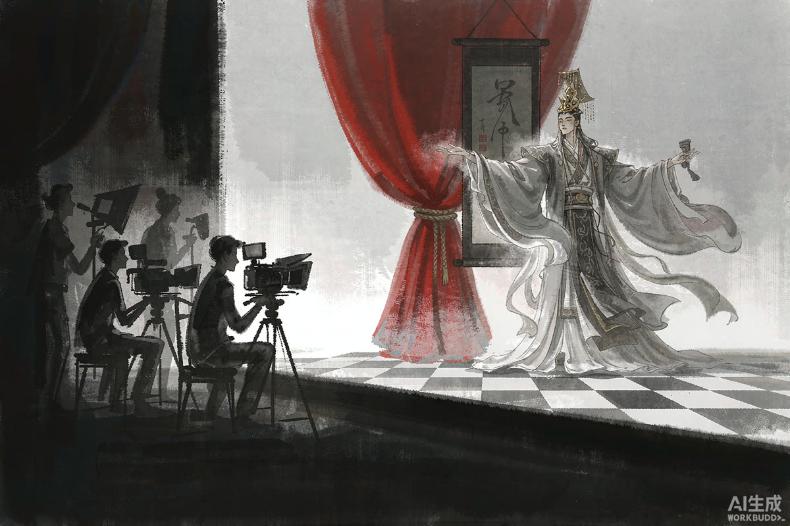

憋死七万铁骑、冻死兵部尚书：古偶的剧本是怎么写崩的
一部古装偶像剧里，七万精锐铁骑被"憋死"，兵部尚书被"冻死"——剧情截图一出，全网笑着转发。笑声之后值得问一句：为什么逆天剧情在古偶里总也绝迹不了。
事情的起点是剧中的军事情节：围而不攻，硬生生把七万精锐"憋死"；一代兵部尚书的结局，竟是"冻死"。军事常识与戏剧逻辑双双下线，观众把截图做成了段子合集。
需要说清楚的是：观众群嘲的不是"架空历史"，而是"逻辑自废"——架空世界可以没有真实历史，但不能没有自洽规则。规则的窟窿一旦被戳破，整部剧的代入感就塌了。

▲ 图注：摄影机前是历史，摄影机后是生意（号外风 · 示意）
个体论 ▸ 一部剧一个锅，别上升到行业——市场里也有逻辑严密的古偶，烂剧本只是少数派被放大了。
系统论 ▸ 当话题度比剧作质量更能换流量，当"被群嘲"也能收割热度，剧本逻辑就成了最先被牺牲的成本项。
编辑部的判断偏后者：逆天剧情反复出现，与其说是能力问题，不如说是激励问题——当骂声也是流量，写崩反而成了低成本高回报的选择。这才是最该警惕的信号。
群嘲看起来热闹，本质是观众还在乎——等哪天没人截图、没人吐槽、默默划走，那才是古偶真正该害怕的时刻。把嘲讽当免费宣发，是最短视的算盘。
后续盯什么 WATCHLIST
01 · 该剧的最终热度与评分：验证"骂声也是流量"这套逻辑是否再次兑现
02 · 同期古偶的剧本口碑分布：是集体滑坡还是个别现象
03 · 平台与片方对"黑红营销"的态度变化——有没有人愿意先刹车
你最近一次弃剧是因为什么离谱剧情？评论区亮观点。
口径说明：剧情细节以剧集实际内容为准；观点仅代表编辑部；本栏目不站队、只拆事。